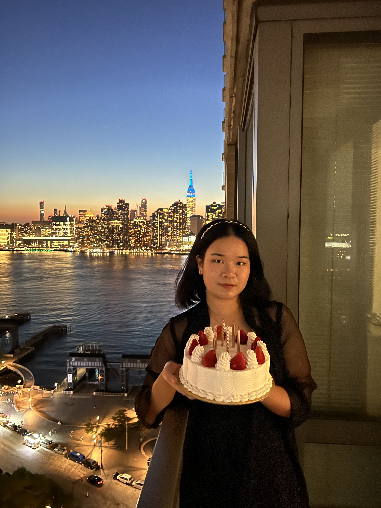

Heading into my second year, I’m eager to explore design and technology, focusing on coding and graphic design to identify the areas I’m passionate about. My current coursework involves p5.js, Arduino IDE, and HTML, and I want to be able to combine these tech skills with my Communication Design minor.This portfolio follow my journey in discovering various way of incorporating p5.js to realize ideas.
